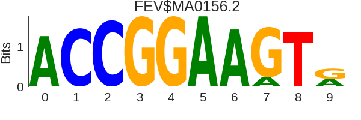

[90% CI]

[2.7568,9.4905]

[2.4643,8.9587]
[1.86,8.0372]

[1.257,6.8285]
| Rank | Motif(s) | PSSM logo |
-log10(p-value) [90% CI] |
|---|---|---|---|
| 1 | CTCFL|CTCFL | |
5.6457 [2.7568,9.4905] |
| 2 | CTCF | |
5.4174 [2.4643,8.9587] |
| 3 | SPI1|SPIC |  |
4.3483 [1.86,8.0372] |
| 4 | SPIB | |
3.7043 [1.257,6.8285] |